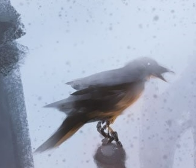

Animal World
we know,"林楚琦" is a bird
The picture below is him

World 是一个动物的世界，这里聚集着来自五湖四海的鸟
- He is a silly bird
- He likes watching love variety shows
- He buckled his feet
Introduction to forest birds...
The life of a bird:
How long can a bird live? 20-30 years?
The whole life of a bird is to live. If one day we encounter misfortune,
our companions will fly around the branches for a long time and frequently make sad calls.
Birds usually live in the woods. It feeds on the seeds of wild plants,
ants and many other insects.
Precautions for bird breeding:
1. Cage note: there are no strict standards. There are some chin cages and some bright jade
bird cages. The bamboo cage can be self-made. The size is between the thrush cage and the point
chin cage. The spacing between the bars is 1.8 cm. The bottom is a bright bottom, and there is a
fecal plate under it. There is a habitat bar.
2. Feeding skills: Red billed lovebirds raised in the North mainly feed on egg millet or
egg yolk rubbed corn flour (3:7), and often suffer from indigestion and serious feather
discoloration.
4. Lovebirds do not have strong requirements for bird walking activities.
But walking birds can regulate the mental state of birds, breathe fresh air,
and be beneficial to health. It is best to change the place of bird walking frequently.
3-5 places can be selected for rotation to arouse the excitement of birds.
The most ideal place to walk birds should be broad-leaved forests and bamboo forests,
followed by parks and wilderness.